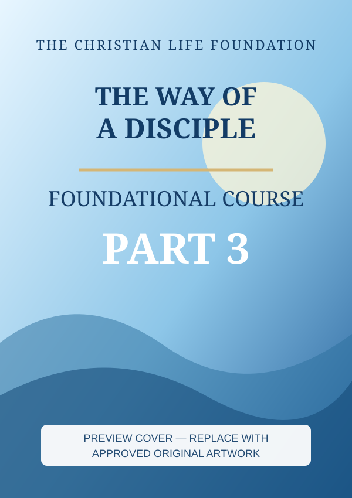

Part 1
Approved title, description and manuscript to be supplied from the original work.
View Part 1 →A clear path for new believers and everyone who wants to follow Jesus faithfully.
Read a 5–10-minute introduction from the approved What's Next? manual, then open the complete teaching when it is ready.
Read What's Next? →Your four-part foundational discipleship course. Begin with Part 1 and progress at your own pace.
These are four separate, scalable visual preview covers, not the previously approved final cover files. Each is ready to be replaced without changing the page layout.
Approved title, description and manuscript to be supplied from the original work.
View Part 1 →Approved title, description and manuscript to be supplied from the original work.
View Part 2 →
Approved title, description and manuscript to be supplied from the original work.
View Part 3 →Approved title, description and manuscript to be supplied from the original work.
View Part 4 →The expanded library is a future, more in-depth course. It will be added gradually as approved manuscripts become available.
Explore future deeper studies →